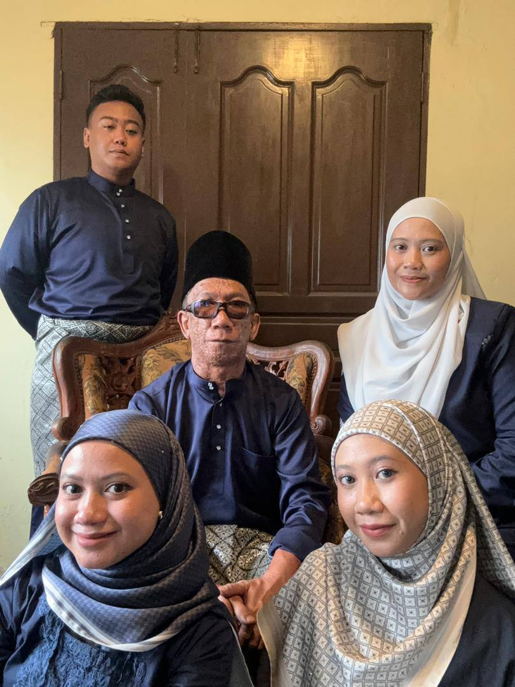
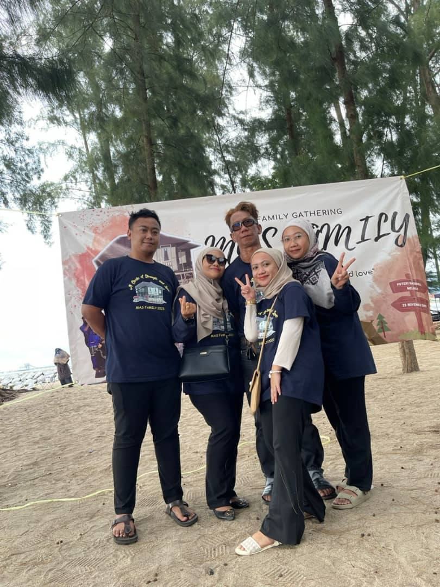
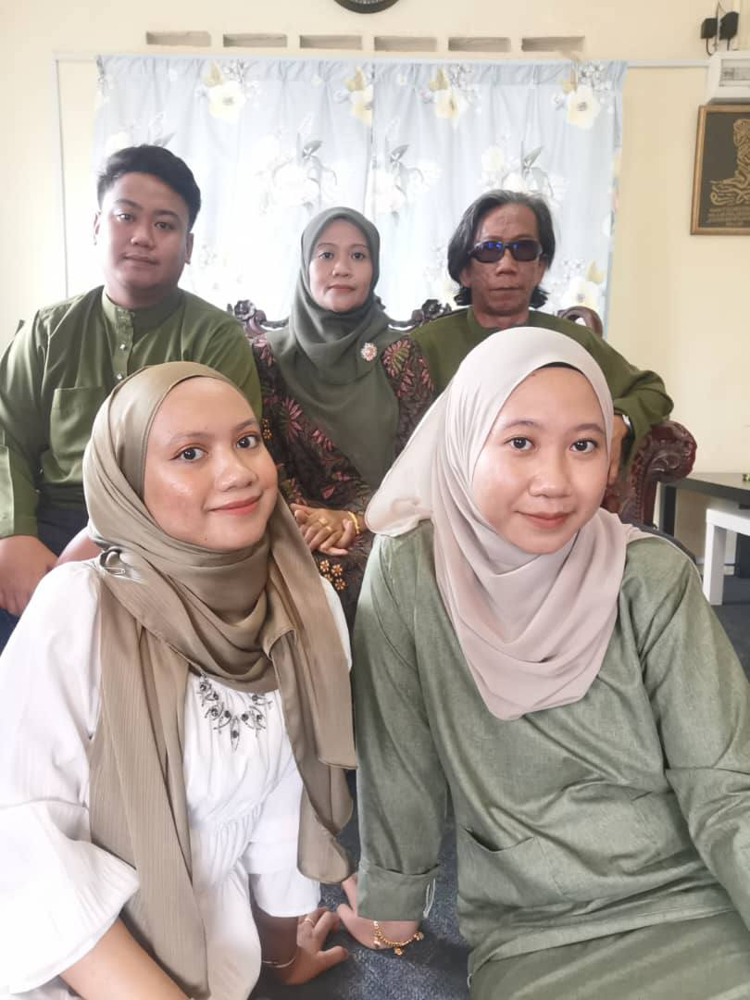

Biodata
Experience
Education
Family
Gallery
Contact
My Family
I come from a loving family and I am the youngest over 3 siblings.
  
Father
: Sha'ari Johari
Mother
: Merlina Mustanir
Brother
: Irfan Sha'ari
Sister
: Fasya Najiha Sha'ari
Me
: Fasya Najwa Sha'ari
Back to Home